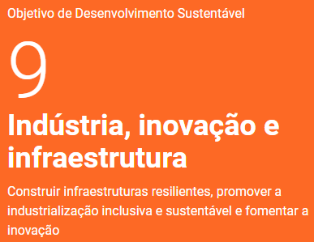

Sobre nós
Nosso projeto visa auxiliar no Objetivo de Desenvolvimento Sustentável 09, que é uma das 17 metas globais estabelecidas pela ONU. O propósito da IdeiaFabril é proporcionar um espaço para compartilhamento de descobertas e inovações que permitam que a industria progrida para um futuro mais eficiente e menos poluente. Link do ODS: "https://brasil.un.org/pt-br/sdgs/9"

Últimos artigos publicados:
| Nome do artigo | Data de publicação | link |
|---|---|---|
| Eficiência Energética na Indústria: Estratégias para Redução de Custos | 12 de julho de 2024 | Leia aqui |
| Tendências em Manufatura Aditiva: Avanços e Aplicações Futuras | 5 de junho de 2024 | Leia aqui |
| Transformação Digital na Indústria 4.0: Desafios e Oportunidades | 20 de maio de 2024 | Leia mais |
| Segurança Cibernética em Sistemas Industriais: Mitigação de Riscos | 15 de abril de 2024 | Leia mais |
| Internet das Coisas (IoT) na Indústria: Implementação e Benefícios | 10 de março de 2024 | Leia mais |